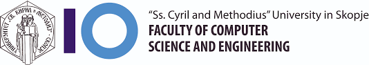

Студирање
Сите велат годините кога си на факултет се најубави, а јас ги прашувам кога идат тие години оти ми иди да се отепам среде испитна
Ама додека ја правам страницава испитната заврши и сега сум среќен реално, и зато можи се во право
Пред да се запишам на Финки, осново и средно образование го поминав во Крушево. Во средно бев ПМБ подрачје и затоа можи сега се мачам да положам Калкулус,
оти некако седев и спиев на часови.
Но, сепак поминав одличен и на матурата малку се помачив но еве сме тука.
За малку немаше да се запишам на Финки, сакав да одам на ПМФ на географија, бидејки ми оди многгуу географијата. Но, оддома рекоја не се глупирај, гледај ја сестрати како тера на електро и ти да учиш компјутери како нејзе. Ок нема проблем, мамо!!
Go Back